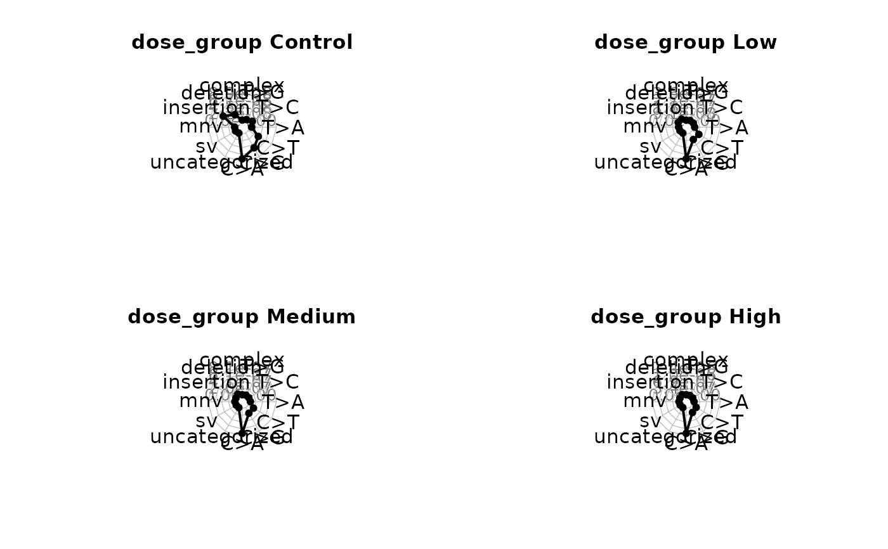
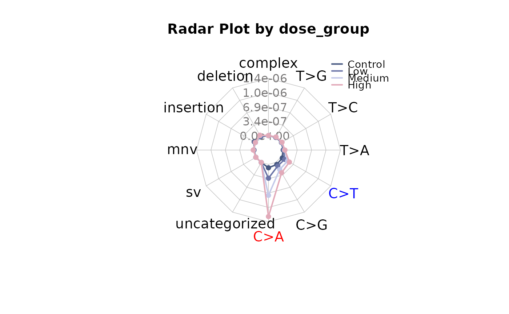

Create a radar plot of mutation frequencies or other metrics across categories (labels), optionally grouped or faceted by a categorical variable.
Usage
plot_radar(
mf_data,
response_col,
label_col,
group_col = NULL,
facet = TRUE,
label_order = "none",
label_order_input = NULL,
group_order = "none",
group_order_input = NULL,
custom_palette = NULL,
label_colors = NULL,
indiv_y = TRUE,
plot_legend = TRUE,
legend_pos = "topright",
vlcex = 1.2,
plot_title = NULL,
facet_col = NULL,
...
)Arguments
- mf_data
A data frame with the data to plot.
- response_col
The column with the response values (numeric).
- label_col
The column with the labels for the radar plot axes.
- group_col
The column with the group variable to plot or facet across. Default is NULL.
- facet
A logical indicating whether to create separate faceted plots for each group in
group_col(TRUE, default) or plot all groups on a single radar plot (FALSE).- label_order
The ordering method for the axis labels. Options are:
"none": Default. Uses existing factor levels iflabel_colis a factor, or alphabetical order."arranged": Orders labels based on one or more columns inmf_dataspecified bylabel_order_input."custom": Orders labels based on a custom character vector supplied tolabel_order_input.
- label_order_input
Specifies details for
label_order. Iflabel_order = "arranged", a character vector of column name(s) inmf_dataused to arrange the data. Iflabel_order = "custom", a character vector of label values in the desired order.- group_order
The ordering method for the groups. Adjusts the facet order when
facet = TRUEor the overlay/series order whenfacet = FALSE. Options are:"none": Default. Uses existing factor levels ifgroup_colis a factor, or the order of appearance inmf_data."arranged": Orders groups based on one or more columns inmf_dataspecified bygroup_order_input."custom": Orders groups based on a custom character vector supplied togroup_order_input.
- group_order_input
Specifies details for
group_order. Ifgroup_order = "arranged", a character vector of column name(s) inmf_dataused to arrange the data. Ifgroup_order = "custom", a character vector of group values in the desired order.- custom_palette
A custom color palette to distinguish groups. Can be a named character vector of colors (with names corresponding to levels/values in
group_col), an unnamed vector of colors, or the name of an RColorBrewer palette. Default is NULL.- label_colors
A custom color specification for the radar axis labels. Can be a named vector of colors (with names corresponding to values in
label_col), an unnamed character vector of colors matching the order of labels, or a single color string. Any labels not specified in a named vector default to "black". Default is NULL ("black").- indiv_y
A logical indicating whether to use individual y-axis scales for each plot when
facet = TRUE. Whenfacet = FALSE, all groups share the same scale. Default is TRUE.- plot_legend
A logical indicating whether to show a legend when multiple groups are plotted on the same radar chart (
facet = FALSE). Default is TRUE.- legend_pos
The position of the legend when
plot_legend = TRUE. Can be a keyword such as "topright", "topleft", "bottomright", "bottomleft", etc. Default is "topright".- vlcex
A numeric value specifying character expansion for variable labels. Default is 1.2.
- plot_title
An optional title for the plot. If NULL, a default title is generated.
- facet_col
Deprecated. Use
group_colinstead.- ...
Additional arguments passed to
fmsb::radarchart.
Examples
# Plot the MFmin for each variation type, including the 6 SNV subtypes
# Facet the plots by dose group
mf_ex <- readRDS(system.file("extdata", "Example_files", "mf_data_6.rds",
package = "MutSeqR")
)
plot_radar(
mf_data = mf_ex,
response_col = "mf_min",
label_col = "normalized_subtype",
group_col = "dose_group",
facet = TRUE,
indiv_y = TRUE
)

# Plot all groups on the same plot with custom palette and label colors
plot_radar(
mf_data = mf_ex,
response_col = "mf_min",
label_col = "normalized_subtype",
group_col = "dose_group",
facet = FALSE,
custom_palette = c("Control" = "#45567f", "Low" = "#6a74a7",
"Medium" = "#c3c9e9", "High" = "#e2aab9"),
label_colors = c("C>A" = "red", "C>T" = "blue")
)
